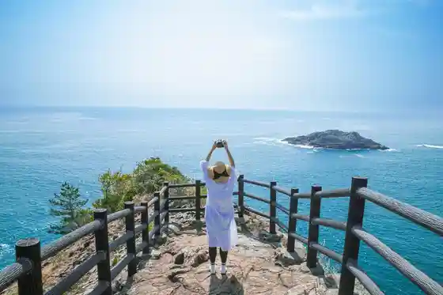
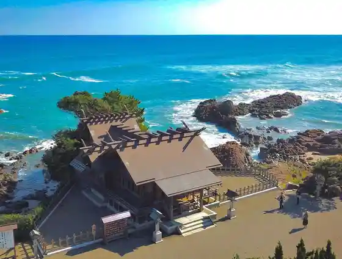
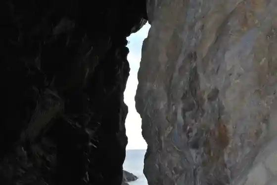
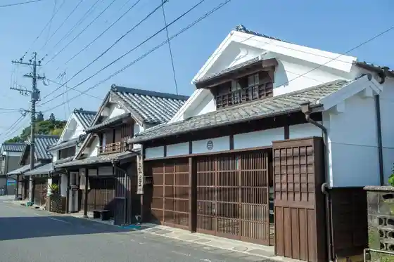

Hyuga Misaki Umagase
Hyuga, Miyazaki · 0982-54-6177 · Official / source link

Dai O Shrine
Hyuga, Miyazaki · 0982-52-3406 · Official / source link

Negaigakanau Kurusu no Umi
Hyuga, Miyazaki · 0982-54-6177 · Official / source link
Udo Shrine (Ryugu)
Hyuga, Miyazaki · 0982-52-3406 · Official / source link

Bi Bi Tsu Juyo Dentoteki Kenzobutsu Gun Hozon Chiku
Hyuga, Miyazaki · Official / source link

O Kuragahama General Park Yakyujo (Medikittosutajiamu)
Hyuga, Miyazaki · 0982-54-7174 · Official / source link
Roadside Station Togo
Hyuga, Miyazaki · 0982-68-3072 · Official / source link
O Kuragahama Beach
Hyuga, Miyazaki · 0982-66-1026 · Official / source link
Roadside Station Hyuga
Hyuga, Miyazaki · 0982-56-3809 · Official / source link
Kuroda no Kashin
Hyuga, Miyazaki · 0982-55-0235 · Official / source link
Isegahama Beach
Hyuga, Miyazaki · 0982-66-1026 · Official / source link
Kofuku Shrine
Hyuga, Miyazaki · 0982-53-0173 · Official / source link
Bokusui Park
Hyuga, Miyazaki · 0982-69-7720 · Official / source link
Ritsu Iwa Shrine
Hyuga, Miyazaki · 0982-58-1638 · Official / source link
Sandomu Hyuga (O Kuragahama General Park)
Hyuga, Miyazaki · 0982-54-7174 · Official / source link
Daio Tani Sports Park (Yakyujo)
Hyuga, Miyazaki · 0982-53-6745 · Official / source link
Sai Shima Lighthouse
Hyuga, Miyazaki · 0987-22-3264 · Official / source link
Kingahama Beach
Hyuga, Miyazaki · 0982-66-1026 · Official / source link
O Kuragahama
Hyuga, Miyazaki · 0982-66-1026 · Official / source link
O Kuragahama General Park (Dai 1 Tamokuteki Plaza)
Hyuga, Miyazaki · 0982-54-7174 · Official / source link
Kashima Shrine
Hyuga, Miyazaki · 0982-55-0235 · Official / source link
Hyuga San Park
Hyuga, Miyazaki · 0982-58-1155 · Official / source link
O Kuragahama General Park (Tenisukoto)
Hyuga, Miyazaki · 0982-54-7174 · Official / source link
Daio Tani Sports Park (Rikujokyogijo)
Hyuga, Miyazaki · 0982-53-6745 · Official / source link
Bi Bi Tsu Kantorii Club
Hyuga, Miyazaki · 0982-58-1140 · Official / source link
O Kuragahama General Park (Dai 2 Tamokuteki Plaza)
Hyuga, Miyazaki · 0982-54-7174 · Official / source link
Kingahama
Hyuga, Miyazaki · 0982-66-1026 · Official / source link
O Hokogaura Beach
Hyuga, Miyazaki · 0982-55-0235 · Official / source link
Isegahama
Hyuga, Miyazaki · 0982-66-1026 · Official / source link
Bokusui Park (Tenisu Ba)
Hyuga, Miyazaki · 0982-69-7720 · Official / source link